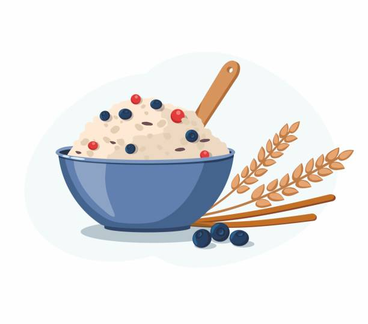
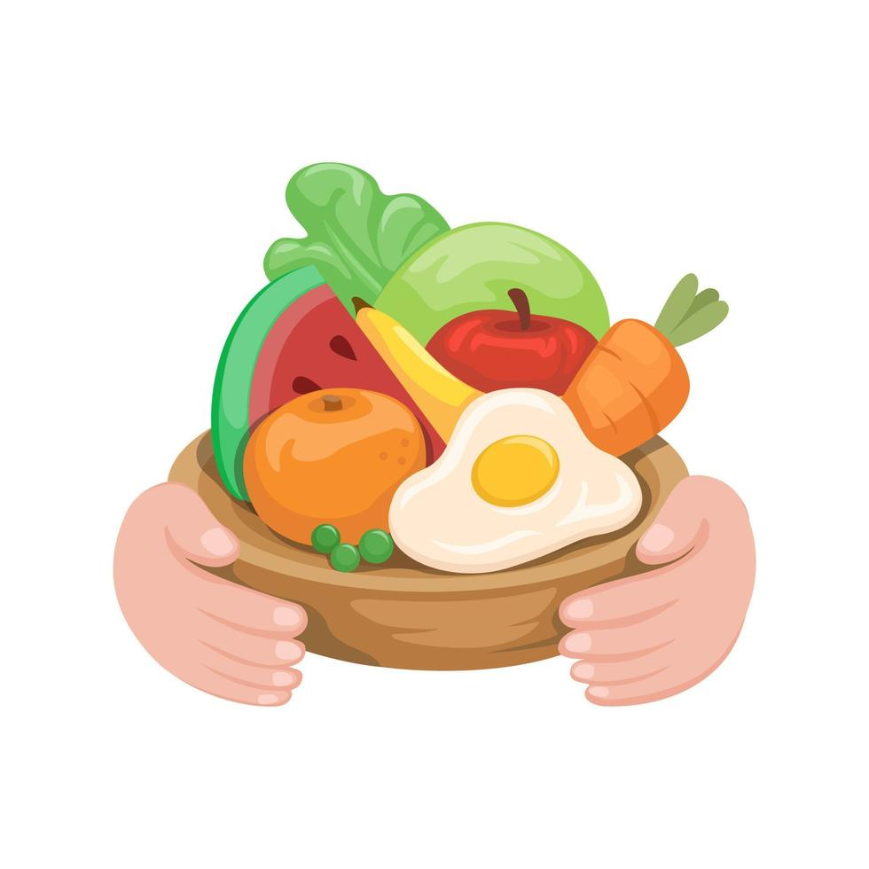
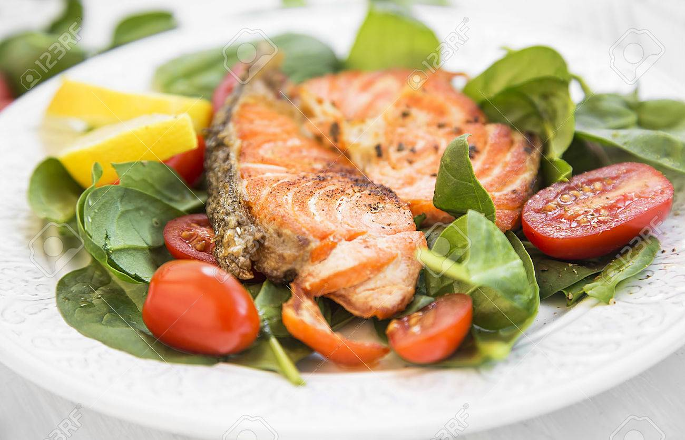

Ideas para el desayuno:
Avena con frutas y nueces

Preparación:
- Cocina 40 g de avena en 150 ml de leche de almendra o agua.
- Añade 1 cucharadita de semillas de chía y remueve bien.
-
Después de cocinarla, agrega 1/2 manzana picada, 1/4 de plátano en rodajas y 10 g de nueces
troceadas.
- Endulza con miel o stevia si lo prefieres.
Hidratos de carbono: Aproximadamente 40 g
Calorías: Alrededor de 280-300 calorías.
Tostadas integrales con aguacate y huevo

Preparación:
- Tuesta 2 rebanadas de pan integral (aproximadamente 40 g cada una).
- Mientras, cocina un huevo a la plancha o pochado.
- Unta 1/4 de aguacate sobre las tostadas.
- Coloca el huevo encima y agrega un poco de sal y pimienta al gusto.
Hidratos de carbono: 30 g
Calorías: 350-400 calorías
Ideas para la comida:
Ensalada de quinoa con pollo a la plancha

Preparación: Cocina 60 g de quinoa siguiendo las instrucciones del paquete. Asa 120 g
de pechuga de pollo con un poco de aceite de oliva, sal y pimienta. Lava y corta en trozos 1/2 pepino, 1
tomate, 1/4 de cebolla morada y 1/4 de pimiento rojo. Mezcla la quinoa cocida con las verduras picadas y
el pollo en trozos.
Aliña con una vinagreta ligera hecha con 1 cucharadita de aceite de oliva,
limón, sal y pimienta.
Hidratos de carbono: 40 g
Calorías: Alrededor de 350-400 calorías.
Pasta integral con tomate, albahaca y queso feta

Preparación: Cocina 60 g de pasta integral según las instrucciones del paquete.
Mientras, corta 1 tomate grande en cubos y pica unas hojas de albahaca fresca.
En una sartén con una cucharadita de aceite de oliva, saltea los tomates con una pizca de sal y pimienta
hasta que se ablanden. Mezcla la pasta cocida con los tomates salteados, añade las hojas de albahaca y
30 g de queso feta desmenuzado.
Aliña con un poco de aceite de oliva extra virgen y más sal y pimienta al gusto.
Hidratos de carbono: Aproximadamente 40 g
Calorías: Alrededor de 400-450 calorías.
Ideas para la cena:
Pollo al horno con batata y brócoli
Ingredientes:
- 150 g de pechuga de pollo
- 1 batata mediana
- 100 g de brócoli
- Sal (al gusto)
- Pimienta (al gusto)
- Ajo en polvo (opcional)
- 1 cucharadita de aceite de oliva
Preparación: Precalienta el horno a 200ºC.
Pela y corta 1 batata mediana en trozos pequeños. Colócala en una bandeja para hornear. Sazona 150 g de
pechuga de pollo con sal, pimienta, ajo en polvo y un chorrito de aceite de oliva. Coloca el pollo en la
bandeja junto con la batata y hornea durante unos 25-30 minutos o hasta que el pollo esté completamente
cocido. Mientras, cocina 100 g de brócoli al vapor o en agua con sal durante unos 5-7 minutos.
Sirve el pollo con la batata y el brócoli al lado.
Hidratos de carbono: 35 g (de la batata)
Calorías: 350-400 calorías
Salmón a la plancha con espinacas y tomate

Ingedientes:
- 150 g de salmón
- 100 g de espinacas frescas
- 1 tomate
- 1 cucharadita de aceite de oliva
- Sal (al gusto)
- Pimienta (al gusto)
- Limón (opcional, para darle sabor al salmón)
Preparación: Cocina 150 g de salmón a la plancha con un poco de aceite de oliva, sal y
pimienta. Si deseas, puedes agregar un poco de limón al final de la cocción.
Lava y corta 100 g de espinacas frescas y 1 tomate en rodajas. En un bol, mezcla las espinacas y el
tomate con una cucharadita de aceite de oliva, sal y pimienta.
Sirve el salmón junto a la ensalada de espinacas y tomate.
Hidratos de carbono: 10-12 g
Calorías: 350-400 calorías